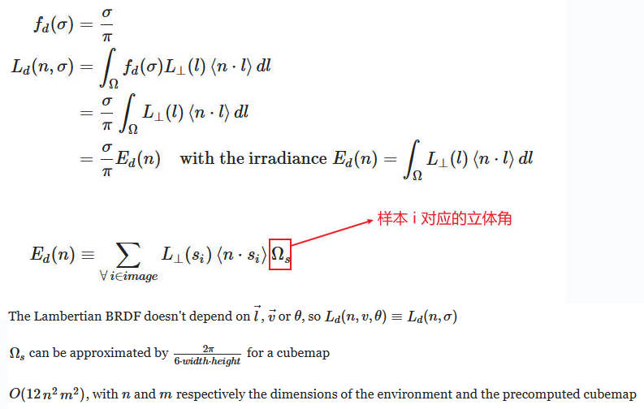
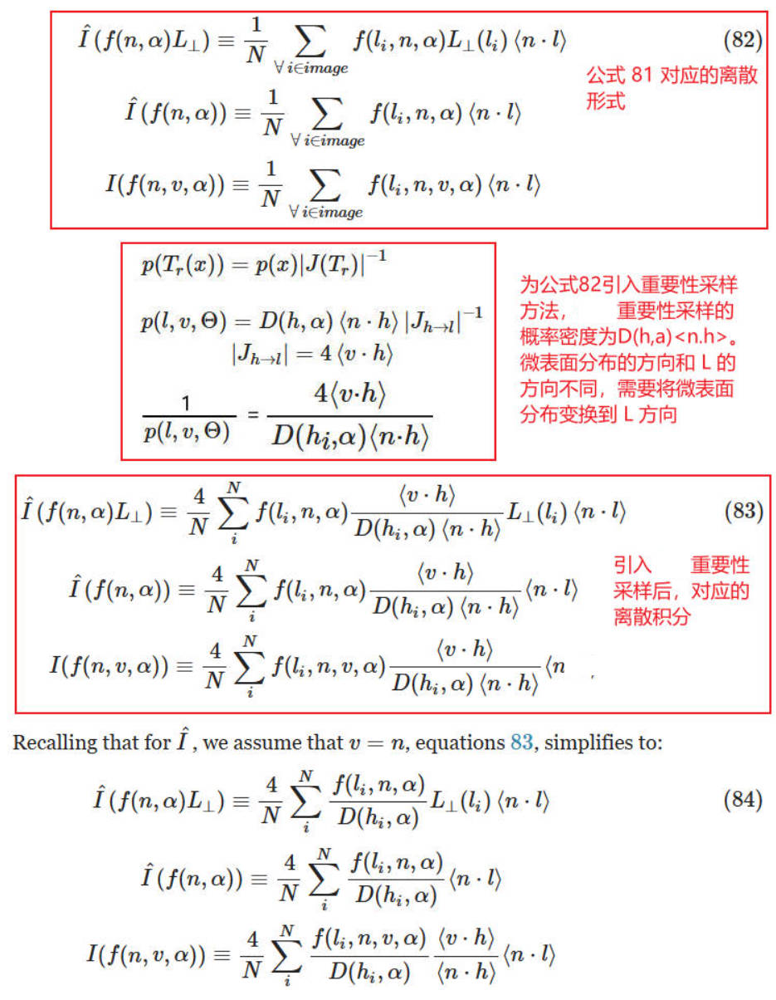

IBL
Table of Contents
IBL note.
<!– more –>
IBL
Filament IBL
在现实生活中，物体接受的光线，或者直接来自光源，或者来自环境中的其他物体反射的光线，这个过程中部分被吸收。从某种意义上说，物体周围的整个环境可以被视为一个光源。图像，特别是立方体图，是编码这样的“环境光”的好方法。这被称为基于图像的照明（IBL）或有时称为间接照明(Indirect Lighting)。
基于图像的照明有一些限制。显然，环境图像必须以某种方式获取，并且如下所示，在其用于照明之前需要进行预处理。通常，环境图像是在真实世界中离线获取的，或者由引擎在离线或运行时生成；无论哪种方式，都会使用 local 或 distant probes。
这些 probes 可以用来获取 distant 或 local 环境。在本文中，我们专注于 distant environment probes，其中假设光线来自无限远处（这意味着物体表面的每个点都使用相同的环境图）。
整个环境为物体表面上的某一点提供光线；这被称为 irradiance（E）。从物体反射的光被称为 radiance（Lout）。必须一致地将入射光应用于 BRDF 的漫反射和镜面部分。
由图像照明（IBL）的辐照度和材质模型(BRDF) f(Θ) 之间的相互作用产生的辐射率 (radiance Lout) 计算如下：
请注意，这里我们正在研究表面的宏观行为（不要与微观方程混淆），这就是为什么它只取决于 n 和 v。基本上，我们将 BRDF 应用于来自所有方向的“点光源”，并编码为 IBL。
IBL Types
现代渲染引擎中使用的 IBL 共有四种常见类型：
Distant light probes: 用于捕获“无限远处”的照明信息，这里可以忽略视差(parallax)。distant probes 通常包含天空、远处的景观特征或建筑物等。它们可以由引擎捕获，也可以从相机获取高动态范围图像（HDRI）。
Local light probes: 用于从特定视角捕获世界的某个区域。捕获投影在立方体或球体上，具体取决于周围的几何形状。local probes 比 distance probes 更精确，特别适用于向材质添加局部反射。
Planar reflections: 用于通过渲染平面镜像场景来捕获反射。这种技术仅适用于建筑物地板、道路和水等平坦表面。
Screen space reflection: 通过在深度缓冲区中进行射线跟踪，基于渲染场景（例如使用上一帧）来捕获反射。SSR 可以得到很好的结果，但可能非常昂贵。
此外，我们必须区分静态和动态的 IBL。例如，实现完全动态的日/夜循环需要动态重新计算 distanct light probes。Planar reflections 和 SSR 本质上都是动态的。
IBL Unit
如前面在直接照明部分讨论的，我们所有的灯光都必须使用物理单位。因此，我们的 IBL 将使用 luminance 单位 cd/m^2，这也是所有直接照明方程的输出单位。使用 luminance 单位对于引擎捕获的光探头（动态或静态离线）是很直观的。
但是，处理高动态范围图像就有点棘手。相机不记录测量的亮度，而是只与原始场景亮度相关的设备相关值。因此，我们必须向艺术家提供一个乘数，使他们能够恢复或至少接近原始绝对亮度。
为了正确重建 HDRI 的亮度用于 IBL，艺术家必须做的不仅仅是拍摄环境的照片，还需要记录额外信息：
- Color calibration (颜色校准)：使用灰卡或 MacBeth ColorChecker
- Camera settings ：光圈、快门和 ISO
- Luminance samples：使用 spot/luminance meter
Processing light probes
我们之前看到，IBL 的 radiance 是通过对表面半球进行积分来计算的。由于这显然在实时操作中太昂贵了，我们首先必须预处理我们的光探头，将它们转换为更适合实时交互的格式。
下面的部分将讨论用于加速 light probes 求解的技术：
- Specular reflectance: 预滤波的重要性采样和 split-sum
- Diffuse reflectance: 辐照度图和球谐函数
Distant light probes
Diffuse BRDF integration

irradiance Ed 计算很简单，但是，实时计算速度很慢(每个着色点都需要访问 cubemap 上所有 texels)。可以对其进行预计算并存储到 cubemap 中，以提升运行时效率。σ/π这一项与 IBL 无关，在运行时乘该项来得到 radiance。
下图展示了 image based environment 对应的 irradiance map.
然而，辐照度（irradiance）也可以通过球谐分解（SH）来近似，并且在运行时可以以低成本计算。在移动设备上，最好避免使用纹理提取，以节省一个纹理单元。即使存储到立方体纹理中，使用 SH 分解来预先计算积分然后再渲染的速度也比使用纹理提取快几个数量级。
SH 分解与傅立叶变换类似，它在频率域中表示信号。SH 最有趣的特性有：
- 只需要很少的系数来编码 ⟨cosθ⟩
- 时域空间中具有圆对称性的核卷积，在 SH 空间中为非常廉价的乘积
实践中，只需要 4 或 9 个系数（即 2 或 3 个波段）就足以编码⟨cosθ⟩，这意味着我们也不需要更多项来表示 L⊥。
下图是使用 2 阶 SH 和 3 阶 SH 表示相同 irradiance 的对比图：

重建 SH 表示的 irradiance 的代码也很简单：
vec3 irradianceSH(vec3 n) // n 为着色点出的world space normal { // uniform vec3 sphericalHarmonics[9] // 不同波长的光 irradiance 分解为SH 对应的系数不同，所以，这里使用vec3 // We can use only the first 2 bands for better performance // 二阶SH只需要4个系数 return sphericalHarmonics[0] + sphericalHarmonics[1] * (n.y) + sphericalHarmonics[2] * (n.z) + sphericalHarmonics[3] * (n.x) + sphericalHarmonics[4] * (n.y * n.x) + sphericalHarmonics[5] * (n.y * n.z) + sphericalHarmonics[6] * (3.0 * n.z * n.z - 1.0) + sphericalHarmonics[7] * (n.z * n.x) + sphericalHarmonics[8] * (n.x * n.x - n.y * n.y); }
Tips: SH 0 阶对应的值（sphericalHarmonics[0]）就是平均的 irradiance
Specular BRDF integration

对于公式 77，我们可以将 Lout 看作是 L⊥ 和 f(l,v,Θ)⟨n⋅l⟩ 卷积的结果，即以 brdf 为卷积核对环境进行过滤。粗糙度越高，镜面反射看起来越模糊。
将 f 的表达式带入公式 77 得到公式 78. 公式 78 中，Lout 依赖于 v、α、f0 以及 f90，这几个变量都在积分内，这使得求解该积分消耗非常高，即使使用 pre-filtered importance sampling 也无法实时计算。
Simplifying the BRDF integration
由于没有 closed-from 的解决方案或简单的方法来计算 Lout 积分，我们使用简化的方程来代替：I^，其中我们假设 v=n，即视线方向 v 始终等于表面法线 n。显然，这种假设会破坏所有视角相关效果，例如越靠近观察者的反射越模糊（也称为拉伸的反射 stretchy reflections）。
这样的简化也会严重影响常数环境，例如 白色炉（white furnace），因为它会影响结果的常数项的幅度。我们可以通过在我们的简化积分中使用一个比例因子 K 来纠正这一点，这将确保当正确选择时，平均辐照度保持正确。
Tips: 白色炉是一种常数环境，指的是一个没有颜色变化的环境，比如全白的房间。
通过上面的推导，最终得出，为了计算近似的积分，需要计算如下三个积分：
Discrete Domain

请注意，此时我们几乎可以离线计算这两个方程了。唯一的困难是，在预计算这些积分时，我们不知道 f0 和 f90。我们将在下面看到，我们可以在运行时为方程 86 添加这些项，但是对于方程 85 来说，这是不可能的，我们必须假设 f0=f90=1（即，菲涅耳项始终为 1）。
我们还必须处理 BRDF 的 V 项(可见性项)，实践中保持它会导致与参考值(ground truth)相比略差的结果，因此我们还将 V=1。
在方程 85 和 86 中替换 f：
Tips: f0 表示垂直照射表面的 Fresnel 值，f90 表示 NV 夹角为 90 度照射表面的 Fresnel 值
请注意，DFG1 和 DFG2 只取决于 n⋅v，即法线 n 和视线方向 v 之间的角度。这是因为积分对 n 是对称的。在积分时，我们可以选择任何满足 n⋅v 的视线方向 v。
- LD implement
- DFG implement
float GDFG(float NoV, float NoL, float a) { float a2 = a * a; float GGXL = NoV * sqrt((-NoL * a2 + NoL) * NoL + a2); float GGXV = NoL * sqrt((-NoV * a2 + NoV) * NoV + a2); return (2 * NoL) / (GGXV + GGXL); } // float2 : x=DFG1; y=DFG2; float2 DFG(float NoV, float a) { // 因为积分对 N 是对称的，取任意满足 NoV 的 V就可以了 float3 V; V.x = sqrt(1.0f - NoV*NoV); V.y = 0.0f; V.z = NoV; float2 r = 0.0f; for (uint i = 0; i < sampleCount; i++) { float2 Xi = hammersley(i, sampleCount); float3 H = importanceSampleGGX(Xi, a, N); float3 L = 2.0f * dot(V, H) * H - V; float VoH = saturate(dot(V, H)); float NoL = saturate(L.z); float NoH = saturate(H.z); if (NoL > 0.0f) { float G = GDFG(NoV, NoL, a); float Gv = G * VoH / NoH; float Fc = pow(1 - VoH, 5.0f); r.x += Gv * (1 - Fc); r.y += Gv * Fc; } } return r * (1.0f / sampleCount); }
- IBL evaluation implementation
下面代码展示了计算 IBL 的方法，使用了前面几节描述的各种纹理
vec3 ibl(vec3 n, vec3 v, vec3 diffuseColor, vec3 f0, vec3 f90, float perceptualRoughness) { vec3 r = reflect(n); vec3 Ld = textureCube(irradianceEnvMap, r) * diffuseColor; float lod = computeLODFromRoughness(perceptualRoughness); vec3 Lld = textureCube(prefilteredEnvMap, r, lod); vec2 Ldfg = textureLod(dfgLut, vec2(dot(n, v), perceptualRoughness), 0.0).xy; vec3 Lr = (f0 * Ldfg.x + f90 * Ldfg.y) * Lld; return Ld + Lr; }
我们也可以使用球谐函数而不是 irradiance cubemap，并使用 DFG LUT 的解析近似，这样可以节省几次纹理查找。
The LD term visualized
LD 是环境和一个只取决于 α 参数（与粗糙度相关）的函数进行卷积得到的。LD 可以方便地存储在 mip-mapped cubemap 中，其中增加的 LOD 会接收到随着粗糙度增加而预先过滤的 environment。这种方法很有效，因为这种卷积是一个强大的低通滤波器。为了充分利用每个 mipmap 级别，需要重新映射α；我们发现使用 γ=2 的 power remapping，效果很好并且也很方便。
下图展示了生成的 mip-mapped cubemap:
The DFG1 and DFG2 term visualized
DFG1 和 DFG2 都可以使用普通的 2D 纹理预先计算，索引为（n⋅v,α），然后使用双线性采样，也可以在运行时使用表面的解析近似来计算。预先计算得到的纹理如下图所示：
DFG1 和 DFG2 很方便地落在[0,1]范围内，但是 8 位纹理没有足够的精度，会导致问题。不幸的是，对于移动设备来说，16 位或浮点纹理并不普遍，而且纹理采样器的数量有限。尽管使用纹理的着色器代码易于理解，但使用解析近似可能更好。然而请注意，由于我们只需要存储两个项，因此 OpenGL ES 3.0 的 RG16F 纹理格式是一个很好的选择。
这种解析近似在[Karis14]中有描述，它本身基于[Lazarov13]。[Narkowicz14]是另一个有趣的近似。请注意，这两种近似与第 5.3.4.7 节中介绍的能量补偿项不兼容。下图展示了这些近似的视觉表示:
- Karis14 Physically Based Shading on Mobile https://www.unrealengine.com/en-US/blog/physically-based-shading-on-mobile
- Narkowicz14 https://knarkowicz.wordpress.com/2014/12/27/analytical-dfg-term-for-ibl/
Indirect specular and indirect diffuse components visualized
图 53 显示了间接照明如何与电介质和导体相互作用。为了说明的目的，直接照明被移除了。
Pre-integration for multiscattering
Summary
为了计算 distant image-based lights 的镜面贡献，我们不得不做出一些近似和妥协：
- v=n，该假设是对 IBL 的非 constant part 进行积分时造成最大误差的假设。这导致与视点相关的粗糙度各向异性完全丢失。
- 对于 IBL 的非 constant 部分，粗糙度的贡献是被量化的，并且使用三线性滤波器在这些级别之间进行插值。这在低粗糙度下最明显（例如：对于 9 个 LODs 的 cubemap，大约在 0.0625 附近）。
- 由于 mipmap 级别用于存储预计算的环境，它们不能如预期的那样用于纹理缩小。这可能会在高频率区域或低粗糙度和/或远距离或小物体的环境中导致锯齿或莫尔纹等 artifacts。这也可能会影响性能，因为会产生糟糕的缓存访问模式。
- IBL 的非 constant 部分没有菲涅耳效应
- IBL 的非 constant 部分的可见性=1
- Schlick's Fresnel 来近似 Fresnel 项
- 在多次散射的情况下，f90=1
下图展示了，由于 v=n 假设，导致拉伸的反射效果丢失:
下图展示了，由于量化存储预计算的环境，导致的错误:
下图展示了由于 mipmap 级别用于存储预计算的环境，不能如预期的那样用于纹理缩小，而导致的摩尔纹：
下图使用由彩色垂直条纹组成的环境（天空盒隐藏）环境，α=0，金属球上的纹理缩小导致了莫尔纹图案
Clear coat
在采样 IBL 时，清漆层被计算为第二个镜面反射。因为我们无法合理地在半球上进行积分，这个镜面反射沿着视线方向定向。下面代码中演示了这个近似。它还显示了能量守恒的步骤。重要的是要注意，这个第二个镜面反射与主镜面反射完全相同，使用相同的 DFG 近似计算。
// clearCoat_NoV == shading_NoV if the clear coat layer doesn't have its own normal map float Fc = F_Schlick(0.04, 1.0, clearCoat_NoV) * clearCoat; // base layer attenuation for energy compensation iblDiffuse *= 1.0 - Fc; iblSpecular *= sq(1.0 - Fc); iblSpecular += specularIBL(r, clearCoatPerceptualRoughness) * Fc;
Anisotropy
[McAuley15]描述了一种称为“bent reflection vector”的技术，基于[Revie12]。bent reflection vector 是各向异性照明的粗略近似，但另一种选择是使用重要性采样。这种近似计算成本相当便宜，并且提供了良好的结果，如下图 59 和图 60 所示。
vec3 anisotropicTangent = cross(bitangent, v); vec3 anisotropicNormal = cross(anisotropicTangent, bitangent); vec3 bentNormal = normalize(mix(n, anisotropicNormal, anisotropy)); vec3 r = reflect(-v, bentNormal);
通过接受负各向异性值，可以使这种技术更有用，如下面代码所示。当各向异性为负时，高光不在切线方向，而是在副切线方向。
vec3 anisotropicDirection = anisotropy >= 0.0 ? bitangent : tangent; vec3 anisotropicTangent = cross(anisotropicDirection, v); vec3 anisotropicNormal = cross(anisotropicTangent, anisotropicDirection); vec3 bentNormal = normalize(mix(n, anisotropicNormal, anisotropy)); vec3 r = reflect(-v, bentNormal);
下图展示了两种方式的效果对比：
- [McAuley15] Stephen McAuley. 2015. Rendering the World of Far Cry 4. GDC 2015.
Subsurface
TODO
Cloth
对于布料材质模型，IBL 的实现比其他材质模型更复杂。主要的区别在于使用了不同的 NDF（“Charlie” vs 高度相关的 Smith GGX）。如本节所述，我们使用 split-sum 近似来计算在计算 IBL 时的 BRDF 的 DFG 项。这个 DFG 项是为另一个 BRDF 设计的，不能用于布料 BRDF。由于我们设计了布料 BRDF 不需要菲涅耳项，因此我们可以在 DFG LUT 的第 3 个通道中生成单个 DG 项。结果如图 62 所示。
DG 项使用均匀采样生成，如[Estevez17]建议的那样。使用均匀采样时，pdf 仅为 1/2π，我们仍然必须使用雅克比因子 1/4⟨v⋅h⟩。
IBL 的其余实现遵循与常规灯光实现相同的步骤，包括可选的次表面散射项及其 wrap 漫反射分量。与 clear coat IBL 实现一样，我们无法在半球上进行积分，并使用视线方向作为主要光线方向来计算 wrap 漫反射分量。
float diffuse = Fd_Lambert() * ambientOcclusion; #if defined(SHADING_MODEL_CLOTH) #if defined(MATERIAL_HAS_SUBSURFACE_COLOR) diffuse *= saturate((NoV + 0.5) / 2.25); #endif #endif vec3 indirectDiffuse = irradianceIBL(n) * diffuse; #if defined(SHADING_MODEL_CLOTH) && defined(MATERIAL_HAS_SUBSURFACE_COLOR) indirectDiffuse *= saturate(subsurfaceColor + NoV); #endif vec3 ibl = diffuseColor * indirectDiffuse + indirectSpecular * specularColor;
需要注意的是，这只解决了 IBL 问题的一部分。前面描述的预过滤的镜面环境贴图与标准着色模型的 BRDF 卷积，与布料 BRDF 不同。为了获得准确的结果，理论上应该为引擎中使用的每个 BRDF 提供一组 IBL。然而，为我们的用例提供第二组 IBL 并不实际，因此我们决定仍然依赖于现有的 IBL。
Frostbite IBL
Base

约去 F 项的依据：
对于光滑情形， wh 接近 n ，所以 F 基本是定值，分子分母可约去
对于非光滑情形，L 已经变得很粗略了，所以做这种近似也影响不大。
约去 dot(wh, n)的依据：
对于镜面反射的 brdf f(wi,wo)，只会在反射方向 R 的附近有值。在不同方向入射时（除掠射角），brdf 的波瓣变化不大，因此，f(wo,wi(n),n) ≈ f(R, wi(R), R)，即 wo = n = R
烘培时无法知道 v(视角方向) 和 n(着色点的 normal 方向)，所以假设 r(反射方向)、v、n 重合。
diffuse 部分 ： 将 irradiance*1/pi 烘培到 Cubemap 中，diffuse 反射没有固定的反射方向，选择着色点的 normal 作为反射方向，所以 Cubemap 采样 uv 对应于被渲染点的 normal 方向。
specular 部分 1 ： 将 irradiance 的第一部分烘培到 Cubemap 中，Cubemap 采样 uv 对应于 wi 即 reflect(-V,N)
specular 部分 2 ： 将 irradiance 的第二部分烘培到 Texture2D 中，uv.x 对应 NoV, uv.y 对应 roughness
计算 specular 第一部分时，需要知道 wo(即 V)，才能求出 wh(即 H)，但视线方向 V 在预计算时，还无法知道。因此，假设 Normal 方向为视角方向 V，对 GGX 进行重要性采样得到微表面法线方向 H，利用 V 和 H 得到 wi（即 L），这样就可以进行预计算了。
解释一下 ImportanceSampleGGX(float2 Xi,float roughness), Xi 为均匀分布的随机变量 roughness 为粗糙度，该函数内利用了 pdf->cdf->特定分布的随机变量 的方法得到了特定分布的θ,φ表示的微表面法线。
计算 specular 第二部分时，假设了 specular 反射为各项同性，假定 N 为(0,1,0)，则使用 NoV 可以构造一个合法的 V 为(NoV,sqrt(1-NoV*Nov),0)，对 GGX 进行重要性采样得到微表面法线 H，利用 V 和 H 得到 L。这样就可以进行预计算了。
diffuse integrateDiffuseCube
void importanceSampleCosDir(in vec2 u, in vec3 N, out vec3 L, out float NdotL, out float pdf) { // Local referencial vec3 upVector = abs(N.z) < 0.999 ? vec3(0, 0, 1) : vec3(1 ,0 ,0); vec3 tangentX = normalize(cross(upVector, N)); vec3 tangentY = cross(N, tangentX); float u1 = u.x; float u2 = u.y; float r = sqrt(u1); float phi = u2 * pi * 2; L = vec3(r * cos(phi), r * sin(phi), sqrt(max(0.0f, 1.0f - u1))); L = normalize (tangentX * L.y + tangentY * L.x + N * L.z); NdotL = dot(L, N); pdf = NdotL * inv_pi; } vec4 integrateDiffuseCube(in vec3 N, in int sampleCount=1024) { vec3 accBrdf = vec3(0); for(uint i=0; i<sampleCount; ++i) { vec2 eta = getSample(i, sampleCount); vec3 L; float NdotL; float pdf; // see reference code in appendix importanceSampleCosDir(eta, N, L, NdotL, pdf); if(NdotL >0) accBrdf += sample_environment(L).rgb; } return vec4(accBrdf * (1.0f / sampleCount), 1.0f); }
specular integrateCubeLDOnly
OmegaS
OmegaS : Solid angle associated to a sample
OmegaS = d(w)/d(sampleCount) = 1/sampleCount*pdf(sample)
如果样本方向的 PDF 很小，那么其他样本也不太可能生成在类似的方向。在这种情况下，我们希望样本从环境图中带来的光照能在一个大区域内平均，从而提供更好的整体积分近似。另一方面，如果一个方向的 PDF 非常高，多个样本可能会在类似的方向生成。多个样本有助于平均掉该区域积分估计中的误差。在这种情况下，样本应该只在环境图的一个小区域内进行平均，如图下图 a 所示:
OmegaP
OmegaP : Solid angle associated to a pixel of the cubemap
OmegaP = d(w)/d(texelCount) = 4Pi/6*width*height
一个样本对应的 texelCount ： texelCountPerW/samperCountPerW = OmegaS/OmegaP
一个样本对应的 mipmapLevel： log2(OmegaS/OmegaP)*0.5
Tips: lod1 中 1 个像素对应 lod0 中 4 个像素，所以 mipmapLevel=log2(OmegaS/OmegaP)*0.5
L 的样本分布和微表面法线分布相同。着色点 roughness 越大，微表面分布越分散，对应的积分区域越大。着色点 roughness 越小，微表面分布越集中，对应的积分区域越小。
但是，微表面分布的方向和 L 的方向不同，需要将微表面分布变换到 L 方向。
source code
float3 integrateCubeLDOnly (in float3 V , in float3 N , in float roughness ) { float3 accBrdf = 0; float accBrdfWeight = 0; for ( uint i =0; i < sampleCount ; ++ i ) { float2 eta = getSample (i , sampleCount ); float3 L; float3 H; importanceSampleGGXDir ( eta , V , N , roughness , H , L) ; float NdotL = dot (N ,L); if ( NdotL >0) { // Use pre - filtered importance sampling (i.e use lower mipmap // level for fetching sample with low probability in order // to reduce the variance ). // ( Reference : GPU Gem3 ) // // Since we pre - integrate the result for normal direction , // N == V and then NdotH == LdotH . This is why the BRDF pdf // can be simplifed from : // pdf = D_GGX_Divide_Pi (NdotH , roughness )* NdotH /(4* LdotH ); // to // pdf = D_GGX_Divide_Pi (NdotH , roughness ) / 4; // // The mipmap level is clamped to something lower than 8x8 // in order to avoid cubemap filtering issues // // - OmegaS : Solid angle associated to a sample // - OmegaP : Solid angle associated to a pixel of the cubemap float NdotH = saturate ( dot (N , H) ); float LdotH = saturate ( dot (L , H) ); float pdf = D_GGX_Divide_Pi ( NdotH , roughness ) * NdotH /(4* LdotH ); float omegaS = 1.0 / ( sampleCount * pdf ); float omegaP = 4.0 * FB_PI / (6.0 * width * width); float mipLevel = clamp (0.5 * log2 ( omegaS / omegaP ) , 0, mipCount ); float4 Li = IBLCube.SampleLevel(IBLSampler, L, mipLevel) ; accBrdf += Li.rgb * NdotL; accBrdfWeight += NdotL; } } return accBrdf * (1.0 f / accBrdfWeight); }
参考资料
- GAMES202-高质量实时渲染 Realtime Environment Mapping0 https://www.bilibili.com/video/BV1YK4y1T7yY?p=5&vd_source=36597ac15683c2bddfe189d605ca1fa4
- 2014-Siggraph-Moving Frostbite to Physically Based Rendering 3.0
- siggraph-2013_Real Shading in Unreal Engine 4 notes
- https://developer.nvidia.com/gpugems/gpugems3/part-iii-rendering/chapter-20-gpu-based-importance-sampling
- filament https://google.github.io/filament/Filament.html
- filament prefilter env https://github.com/google/filament/blob/main/tools/cmgen/README.md
- 基于物理的渲染：基于图像照明(Image-based Lighting) https://zhuanlan.zhihu.com/p/261005894?utm_source=ZHShareTargetIDMore
- 深入理解 PBR/基于图像照明 (IBL) https://zhuanlan.zhihu.com/p/66518450
- 蒙特卡洛积分 https://zhuanlan.zhihu.com/p/146144853 ImportanceSampleGGX 的原理可以参考该文章
- Prefilter L https://github.com/Ubpa/RenderLab/blob/master/data/shaders/Engine/IBL/prefilter.fs
Unity URP EnvironmentBRDF
real PerceptualRoughnessToMipmapLevel(real perceptualRoughness, uint maxMipLevel/*maxMipLevel=6*/) { perceptualRoughness = perceptualRoughness * (1.7 - 0.7 * perceptualRoughness); return perceptualRoughness * maxMipLevel; } half3 GlossyEnvironmentReflection(half3 reflectVector, float3 positionWS, half perceptualRoughness, half occlusion, float2 normalizedScreenSpaceUV) { // ...... half mip = PerceptualRoughnessToMipmapLevel(perceptualRoughness); half4 encodedIrradiance = half4(SAMPLE_TEXTURECUBE_LOD(unity_SpecCube0, samplerunity_SpecCube0, reflectVector, mip)); irradiance = DecodeHDREnvironment(encodedIrradiance, unity_SpecCube0_HDR); return irradiance * occlusion; // ...... } half3 EnvironmentBRDFSpecular(BRDFData brdfData, half fresnelTerm) { float surfaceReduction = 1.0 / (brdfData.roughness2 + 1.0); return half3(surfaceReduction * lerp(brdfData.specular, brdfData.grazingTerm, fresnelTerm)); } half3 EnvironmentBRDF(BRDFData brdfData, half3 indirectDiffuse, half3 indirectSpecular, half fresnelTerm) { half3 c = indirectDiffuse * brdfData.diffuse; c += indirectSpecular * EnvironmentBRDFSpecular(brdfData, fresnelTerm); return c; } half3 GlobalIllumination(BRDFData brdfData, BRDFData brdfDataClearCoat, float clearCoatMask, half3 bakedGI, half occlusion, float3 positionWS, half3 normalWS, half3 viewDirectionWS, float2 normalizedScreenSpaceUV) { // ...... half3 indirectSpecular = GlossyEnvironmentReflection(reflectVector, positionWS, brdfData.perceptualRoughness, 1.0h, normalizedScreenSpaceUV); half3 color = EnvironmentBRDF(brdfData, indirectDiffuse, indirectSpecular, fresnelTerm); // ...... }